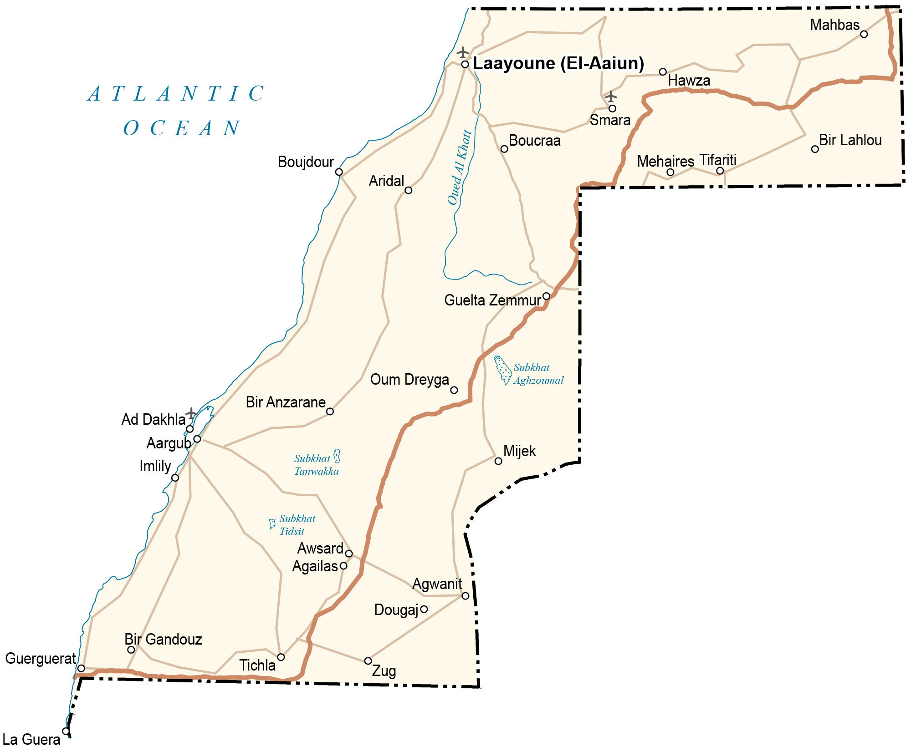

Western Sahara is a disputed territory along the northwest coast of Africa. While Morocco administers about 80% of the region, the partially-recognized Sahrawi Arab Democratic Republic administers the remaining one-fifth of Western Sahara.
The claimed capital is the largest city in Western Sahara, El Aaiún. But Tifariti is the temporary (de facto) capital close to its border with Mauritania. Altogether, it borders 3 nations including Morocco to the north, Algeria to the east, and Mauritania to the south.
Go back home